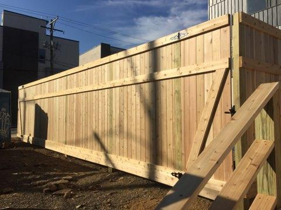
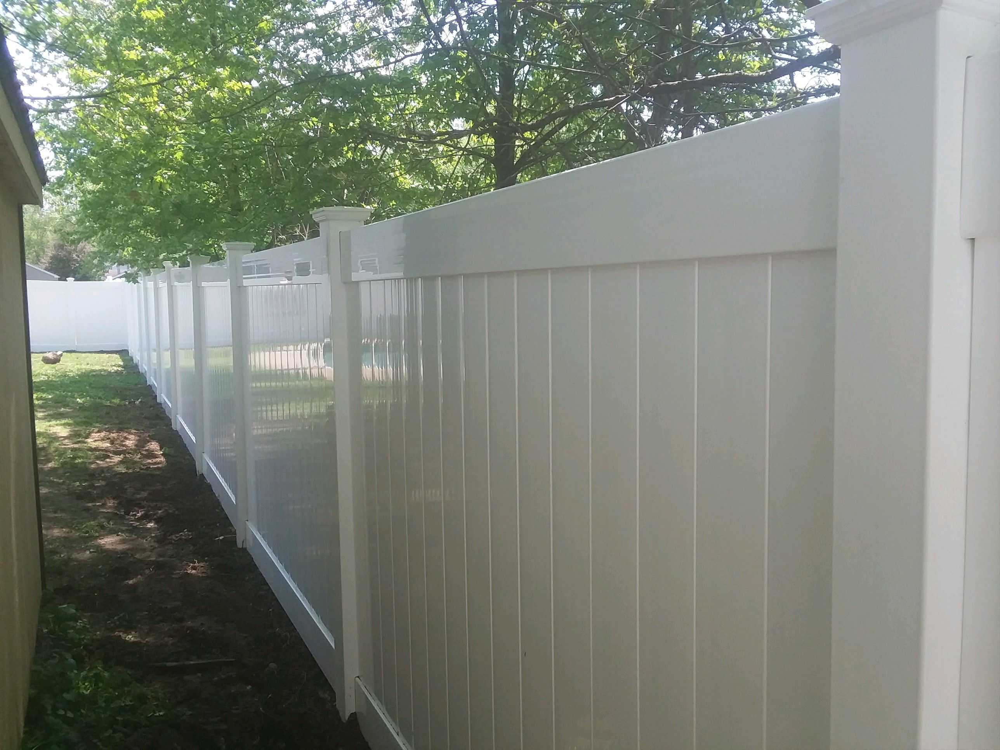

About Us
At Bergo Fencing Inc., we're more than just a fencing company, we're a family-owned business with over 20 years of experience, dedicated to enhancing the beauty, security, and functionality of your property. Whether you need a fence for your home, business, or industrial space, we are committed to delivering quality craftsmanship and exceptional customer service in everything we do.
Why Us?
FAQs
Installation timelines vary based on the size and complexity of your project, but most residential installations are completed within 1–3 days.
Yes! We offer free, no-obligation estimates for all fencing projects.
We specialize in Vinyl, Wood, Aluminum, Chain Link, and Iron, and we also offer additional services like custom gates, dumpster enclosures, and more.
Yes, we use concrete for all of our fence installations to ensure a strong, stable base. This ensures the fence does not shift over time, so your fence will remain secure and last for years to come.
Our Story
At Bergo Fencing Inc., we're more than just a fencing company, we're a family-owned business with over 20 years of experience, dedicated to enhancing the beauty, security, and functionality of your property. Whether you need a fence for your home, business, or industrial space, we are committed to delivering quality craftsmanship and exceptional customer service in everything we do.
Our work speaks for itself, but don’t just take our word for it. Here’s what some of our satisfied customers have to say:
"Ray and his team did an exceptional job. They responded promptly to multiple requests for various estimates. They arrived on the day they said they would start and did an amazing job removing brush and old chain-link fence and replacing it with a lovely white cedar shadow box fence. We received several estimates and they beat all of them." — Anita
"Installed 6ft high vinyl fence in rear yard. Removed old existing wooden fence. Installed new gate and hardware. Cleaned up all old trash and materials and hauled away. I had other estimates. Bergo gave a good price and did not require any money up front. I paid when job was done. Very satisfied with the work they did. All done in a professional manner. I will use him again if I need more fencing." — Wilbur
Service Areas
At Bergo Fencing Inc., we proudly serve communities across Montgomery and Bucks Counties all the way to Reading. We deliver expert fencing solutions with a commitment to quality and customer satisfaction. A full list of all the locations that we service is as follows:
- Abington
- Bensalem
- Feasterville
- Jenkintown
- Langhorne
- Levittown
- Philadelphia
- Southhampton
- Trevose
- Willow Grove
- Reading